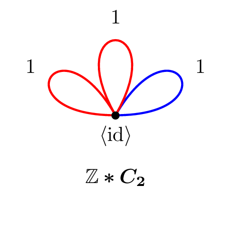
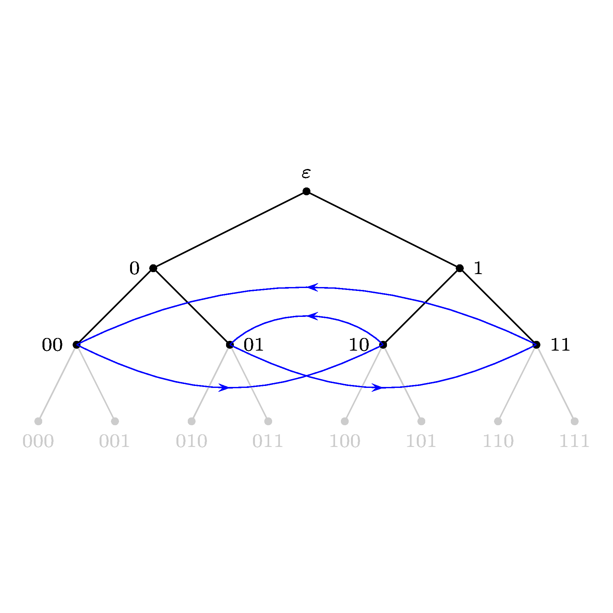
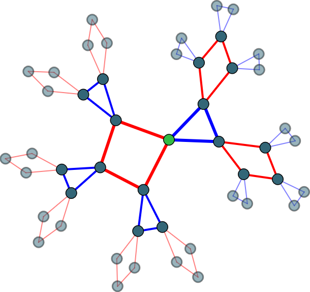
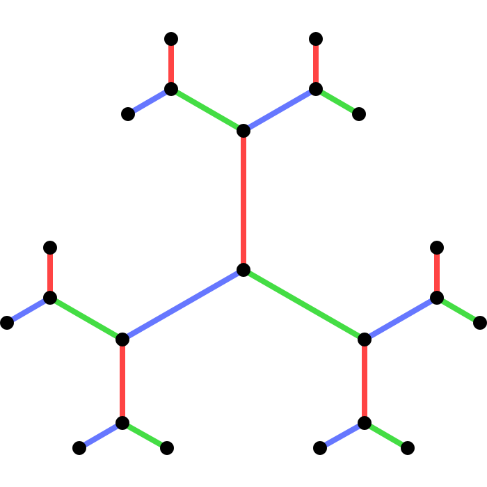
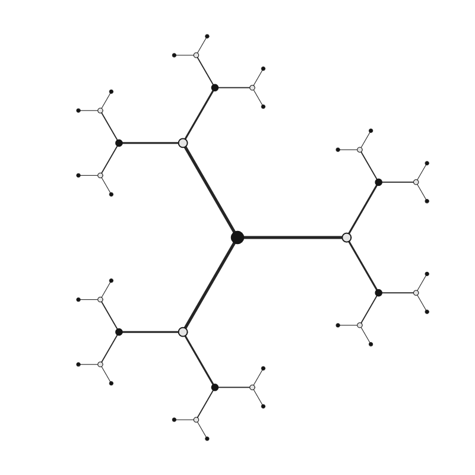
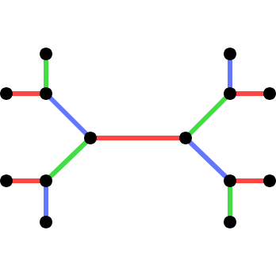
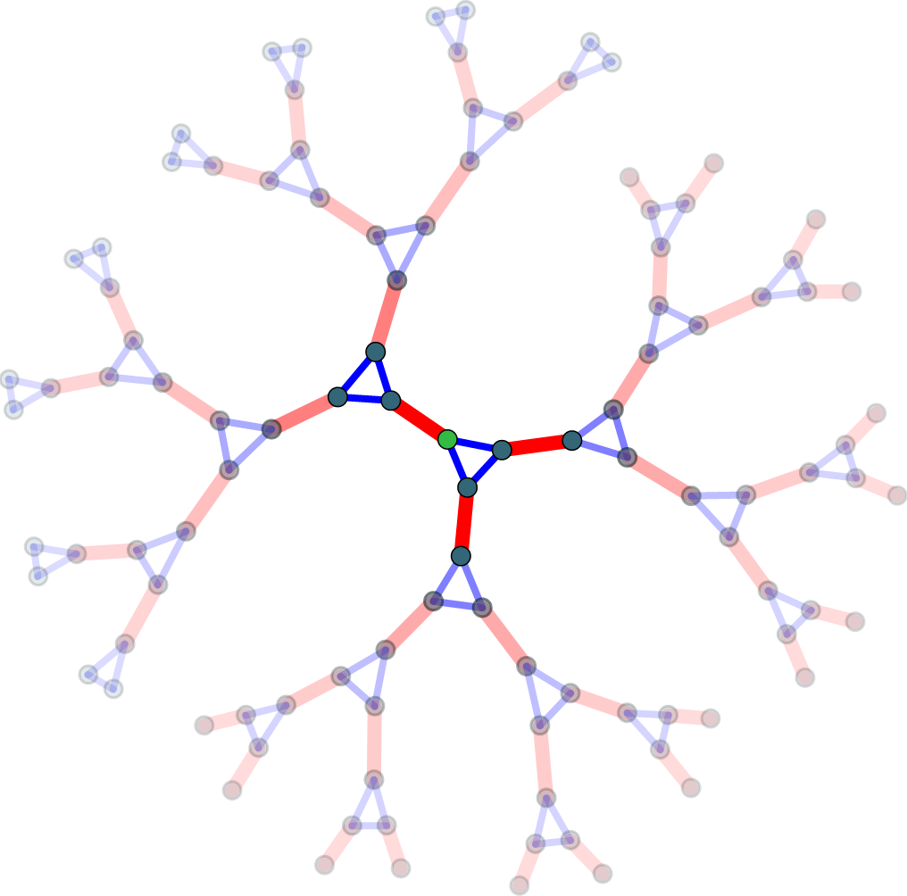

Postgraduate Supervision
Higher order semi-discrete curvature flows
Jahne studies linear semi-discrete geometric flows. Motivated by analogous result of higher order curvature flows in the smooth setting, her research develops polyharmonic flows for closed polygons and polyhedral objects. Such evolutions include those that are parabolic type and hyperbolic type, with self-similar solutions and long-time behaviour investigated. She also establishes an answer to Yau’s problem in this semi-discrete setting, where an initial object flows to any target object via variants of such flows.
Local action diagrams and the scale function
Marcus is investigating the scale function for (P)-closed groups as given by their Reid-Smith local action diagrams. He is also implementing a GAP package that provides a data structure for local actions diagrams and enables computations with them.
Higman–Thompson groups of unfolding trees of rooted graphs
Roman's thesis concerns unfolding trees of rooted directed graphs and their almost structure. It characterises almost isomorphisms and cocompactness of such trees. Moreover, it investigates the associated Higman-Thompson groups, showing how connectivity properties determine whether their action on the boundary is minimal or topologically transitive. Using the Leavitt path algebra, Roman provides a sufficient condition for Higman-Thompson groups to be isomorphic.
On the unitary representation theory of contraction groups
The unitary representation theory of totally disconnected locally compact groups, and in particular, automorphism groups of trees, is not well understood in contrast to that of Lie groups, for example. Max's thesis focuses on understanding the unitary representation theory of certain classes of non-amenable automorphism groups of trees. It finds new type I and non-type I such groups, and classifies the irreducible unitary representations of the type I groups.
Elementary topological groups
Compact and discrete topological groups are considered degenerate examples of totally disconnected locally compact groups. The class of totally disconnected locally compact groups that can be generated from these two classes using various constructions are known as elementary groups, following Wesolek, and admits an ordinal-valued rank function. Among other aspects, João Vitor's thesis constructs elementary groups of large rank.
Undergraduate Supervision
Self-replicating groups from universal groups
Any group that acts vertex-transitively and boundary-2-transitively on a regular tree gives rise to vertex-transitive subgroup that by fixing an end. In turn, any such group gives rise to a self-replicating group by fixing a vertex and restricting the action to the rooted tree oriented away from the fixed end. Colby investigates for which self-replicating groups acting on regular rooted trees this process can be reversed.
Classifying discrete (P)-closed groups using local action diagrams
By Reid-Smith, (P)-closed groups acting on trees may be parametrised using a combinatorial structure known as local action diagrams. Properties of the topological group are reflected in combinatorial properties of its associated diagram. Marcus investigates how to describe discreteness of the group in terms of the diagram.

A GAP package for local action diagrams
By Reid-Smith, (P)-closed groups acting on trees can be parametrised using local action diagrams Properties of the group are reflected in its local action diagram and conversely. The goal of this project is to implement a category for local action diagrams in GAP and provide methods to create local action diagrams as well as test for relevant properties of them.
Sarah Shotter

Self-replicating groups
This project aims to create a GAP package pertaining to self-replicating groups acting on truncated regular rooted trees. In particular, it aims to compute and catalogue such groups for small parameters.
Aditya Joshi

Vertex-transitive graphs
This projects aims to answer the question which finite graphs may appear as the $1$-sphere around vertices in a finite or infinite locally finite vertex-transitive graphs. In the case of infinite graphs, we would further like to answer the question whether the automorphism group of such a graph may be non-discrete, leading to potentially interesting examples of totally disconnected locally compact groups.

Creating and analysing a library of universal groups
The goal of this project is to exhaust the capabilities of the GAP package UGALY by running its methods on the university's high performance computing grid, organise the results into a library of local actions satisfying the compatibility condition and, time permitting, analyse and visualise this library.

The local actions of $\mathrm{PGL}(2,\mathbb{Q}_{p})$ on balls of radius $k$ on its Bruhat-Tits tree
This project develops an algorithm that generates the finite permutation groups that a vertex stabiliser in $\mathrm{PGL}(2,\mathbb{Q}_{p})$ in its action on its Bruhat-Tits tree induces on the sphere of a given radius around said vertex, to included in the GAP package UGALY, which handles $k$-local actions of groups acting on trees.
Groups acting on trees: compatible local actions
This project develops a GAP package pertaining to the $k$-local actions relevant in the setting of generalised Burger-Mozes groups acting on regular trees, introduced by Tornier. The package will allow to create, analyse and find such local actions.
Puzzles, codes and groups
Students explore the mathematical formalisation of the everyday notion of symmetry, which is the algebraic concept of a 'group'. Using groups, we are able to state with certainty whether a given puzzle can be solved (the 15-puzzle can not!) and, if so, compute how many steps are needed. As an example of the far-reaching applicability of this concept, we look into error-correcting codes, such as the Golay code, which are critical in any digital communication.

Groups acting on trees without involutive inversions
The aim of this project is to define a new class of groups acting on regular trees by restricting the local action on edge neighbourhoods rather than vertex neighbourhoods, as is the case for generalised Burger-Mozes groups, and thereby gain a new perspective on existing examples of graph symmetry groups relating to the Weiss conjecture.

Free products of graphs
One way to form highly symmetric, infinite graphs is yo glue together infinitely many copies of finite graphs according to some regular instructions. This project investigates the symmetry groups of examples of graphs formed in this way and compares them with the symmetry groups of infinite regular trees, which are the most basic type of infinite regular graph. The aim is to determine whether the symmetry groups obtained in this way are simple and new.